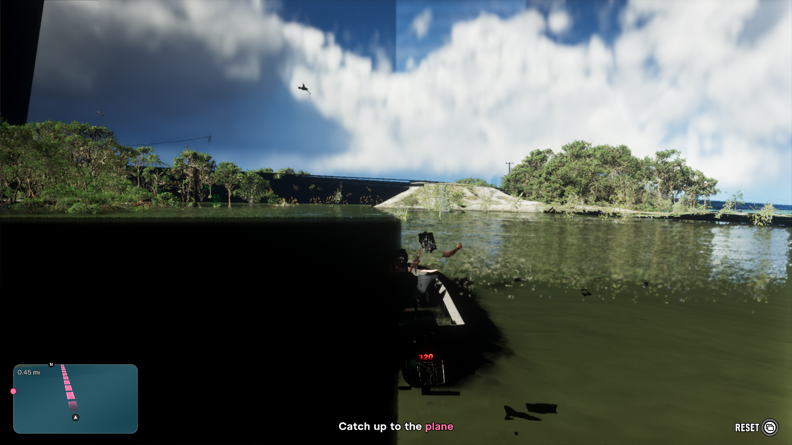

A nine-cell water-tile capture passed its test
The renderer team tested a capture of nine neighbouring cells in the water-tile mask. It is being packaged for the next game comparison. No in-game mask values are available yet.


With the boat at rest, water was visible beside the stern in one frame. A black rectangle covered it in the next. At two fixed pixels, the game’s water shaders supplied colour in the clear frame and left both pixels at zero in the dark one. The viewport stayed the same.
G22 and G23 both reached the camp and walked up to an overturned hull. Offshore, G25 delivered 5.108 displayed fps against G23’s 5.257 on the same GPU. The boat route still read 0.45 miles.
Compare the three water frames →The renderer team tested a capture of nine neighbouring cells in the water-tile mask. It is being packaged for the next game comparison. No in-game mask values are available yet.
G22 dropped this original shader at the dock. Its corrected translation now creates an RTX 5090 pipeline. In a separate compute test, all 448 output words matched and all 28 surrounding guard words were preserved. Its effect on the dock has yet to be measured in the game.
The issue had zero comments at this check. No leaderboard placement has been confirmed. Open PortWatch issue 69 →
Three consecutive G24 frames show an upper-right block, a clear view of the river, then a lower-left block. In frame 4169, two original water shaders supplied colour at native coordinates (1120, 736) and (1216, 1008). In frame 4170 those same pixels stayed zero through both draws. Later lighting added only about 0.0001. Both frames used the same full-frame viewport, scissor and indirect input addresses. The cause of the missing colour is still open. Compare the three water frames →
The corrected original built an RTX pipeline, and nine controlled dispatches produced the expected results. The change is in the G26 candidate. Its in-game output and effect on the image remain unverified.
Assignments and last confirmations in UTC.
Packaging the nine-cell tile-mask capture to investigate the two missing water pixels.
Matched the G24 boat checkpoint and supplied the three original frames. G22 reached the skiff on foot.
Compared G25 with G23 at the stationary river waypoint, following the G23 camp walk.
Validated the opaque-tile and transparency prefilters on the driver. Checking which original programs can run in the title.
PortWatch issue 69 remains open with zero comments and no confirmed rank.
Checked eight original river and dock frames, the two water samples and both FPS windows.